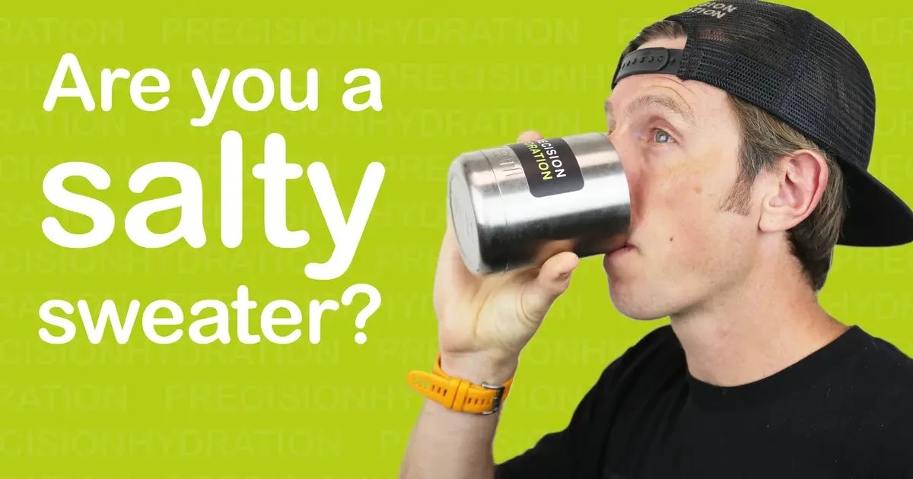

I have a client named Dave who leaves white salt stains on everything he wears. His hats look like they’ve been dipped in powdered sugar. His shirts have stiff white rings around the collar. He once borrowed my car after a run and left a salt mark on the seatbelt. He’s not dirty. He’s just a salty sweater. Dave used to cramp during every marathon. He tried everything. More water, less water, pickle juice, mustard packets, bananas, magnesium. Nothing worked. Then we tested his sweat sodium. The results came back at 1,400 milligrams per liter. That’s more than double the average of 500‑700. He was losing so much sodium that plain water couldn’t keep up. Every time he drank water, he diluted his blood sodium further. Every time he cramped, it was his muscles screaming for salt. I see this all the time. People know they sweat. They know they need to drink. But they have no idea how much sodium they’re losing. And without that number, they’re guessing. Guessing leads to cramping, hyponatremia, and bad performance. Let me show you how to calculate your sweat sodium loss. It’s not hard. You don’t need a lab. You just need a scale, some patience, and a little math. First, measure your sweat rate. This is the same test I described in earlier articles. Weigh yourself naked before exercise. Do your workout for a set time, ideally one hour. Don’t drink during the workout, or if you do, weigh your bottle before and after. Towel off completely and weigh yourself again. The difference in grams is your fluid loss in milliliters. Divide by the number of hours. That’s your sweat rate in L/hour. Dave’s sweat rate in a marathon pace run at 75°F was 1.3 L/hour. He’s a heavy sweater. That’s part of why his sodium loss is so high — more sweat volume means more sodium. Second, estimate your sweat sodium concentration. There are three ways to do this. The cheap way is the salt stain test. After a hard workout, look at your clothes. If you see white rings that feel gritty, you’re likely a salty sweater. If your eyes sting with sweat, that’s another sign. If you crave salt after exercise, that’s another clue. These are qualitative, not quantitative, but they give you a direction. The better way is to use a sweat patch. Companies like Gatorade and Levelen make patches that you wear during exercise. You send them to a lab, and they tell you your exact sodium concentration. It costs about $30‑50. Worth it if you’re a serious athlete or if you cramp frequently. The best way, but also the most expensive, is a full sweat test in a lab. They put you in a hot room, make you exercise, and collect sweat from your arm. You get precise numbers for sodium, potassium, and chloride. This is overkill for most people. Dave did the sweat patch. His sodium concentration came back at 1,400 mg/L. That’s in the 95th percentile. Most people are between 400 and 1,000. Third, calculate your hourly sodium loss. Multiply your sweat rate in L/hour by your sodium concentration in mg/L. For Dave: 1.3 L/hour × 1,400 mg/L = 1,820 mg of sodium lost per hour. That’s an enormous amount. A typical sports drink has about 400‑500 mg of sodium per liter. If he drank only sports drinks, he’d need to consume almost 4 liters per hour just to replace the sodium, which is impossible. So he needs a different strategy: salt tablets, concentrated electrolyte solutions, or very salty foods. A light sweater, by contrast, might have a sweat rate of 0.8 L/hour and a sodium concentration of 400 mg/L. That’s only 320 mg lost per hour. A sports drink could cover that easily. So the same strategy doesn’t work for everyone. Fourth, use the numbers to build a replacement plan. For Dave, we designed a plan with high‑sodium products. He uses a salt tablet that contains 300 mg of sodium per pill. He takes one pill every 20 minutes during a marathon, which gives him 900 mg per hour. He also drinks a high‑sodium sports drink (500 mg per liter) at a rate of 600 mL per hour, which adds another 300 mg. Total sodium per hour = 1,200 mg. That’s still less than his loss of 1,820 mg, but it’s enough to prevent cramping because his body also stores sodium in his blood and tissues. The goal isn’t to replace 100% of sweat sodium during exercise. It’s to prevent a dangerous deficit. For a light sweater, the plan would look very different. Let’s say a 65 kg female runner with sweat rate 0.7 L/hour and sodium concentration 500 mg/L loses 350 mg per hour. She could drink a standard sports drink at 600 mL per hour, get 300 mg of sodium, and be close enough. She doesn’t need salt tablets. Fifth, test and adjust. Dave followed his plan for two weeks. He still cramped a little in his calves at mile 22, but less than before. We increased his pre‑race sodium load. The night before, he drank 500 mL of water with 500 mg of sodium. Race morning, another 500 mL with 500 mg. During the race, he added an extra salt tablet at the start. His next marathon, zero cramps. He ran a 12‑minute PR. The reason most people don’t do this is that it sounds like a lot of work. And it is, at first. But once you have your numbers, you can use them for years. Your sweat sodium is genetically determined. It doesn’t change much with training. Dave’s 1,400 mg/L will probably be the same next year and the year after. So the test is a one‑time investment. I’ve done the sweat patch myself. My sodium concentration is 820 mg/L, which is slightly above average. My sweat rate in Miami is about 1.1 L/hour during a hard run. My hourly loss is about 900 mg. I use a sports drink with 500 mg per liter plus one salt tablet (300 mg) per hour. That works for me. One thing to watch out for is over‑replacing sodium. Too much sodium can cause bloating, high blood pressure, and in extreme cases, hypernatremia (high blood sodium). That’s rare in athletes because you’re sweating so much. But if you’re a light sweater taking heavy salt tablets, you could overshoot. That’s why the test is important. You need to know your number. The other variable is the sodium content of your food. If you eat a salty diet, you might have a higher baseline sodium level in your blood. That might reduce your need for during‑exercise replacement. But don’t rely on that. Sweat loss is rapid. You need during‑exercise sodium. I have a client who tried to replace his sodium with pretzels during a marathon. He ate a handful every 30 minutes. He said his stomach hurt, and he still cramped. Pretzels take a long time to digest. Salt tablets dissolve quickly. Use the right tool. Here’s a quick reference for interpreting sweat sodium levels: Sweat Sodium (mg/L) Category Replacement Strategy < 400 Light sweater Plain water + food sodium is enough for most workouts 400-700 Average Sports drink at 600-800 mL/hour 700-1,000 Above average Sports drink + one salt tablet per hour > 1,000 Salty sweater Salt tablets every 20-30 minutes + high‑sodium sports drink > 1,500 Extreme Consult a sports dietitian; may need prescription products Dave was in the extreme category. He now uses a product called SaltStick that gives him 215 mg per capsule. He takes two every 20 minutes during long runs. That’s 1,290 mg per hour. Combined with his sports drink, he gets about 1,600 mg per hour. His cramps are gone. The tool I built for this does the math automatically.Exercise Sweat Loss Estimator
Enter your sweat rate and estimated sodium concentration. The tool calculates hourly sodium loss and recommends replacement products and doses.
All data stays in your browser — we never see it.
Beverage Hydration Index Tool
Filter drinks by sodium content. Find the best option for your sweat rate.
All data stays in your browser — we never see it.
Daily Water Intake Calculator
Your baseline matters. Don’t just focus on workouts.
All data stays in your browser — we never see it.